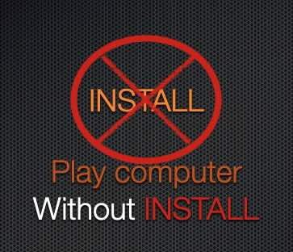

| 主页 | v86测试 | 在线游玩MC(大更新!) | 资源站点 |
Please switch to UTF-8(Simplified Chinese) encoding in your browser if you see garbled text!
.
如果你在您的设备上无法安装/运行一些急需的App,可在本站上寻找是否有您需要使用的,
也可以通过本站提供的Win95/dosbox尝试运行！具体查看下方介绍

注意:此处消息只保存一周!
距离刷新还有
可通过留言提交博客或资源:格式:/push + 标题 + tag=标签一,+标签二,+标签三 + 文章+资源链接（3天内审核，+添加）
举例：/push Macos922CD tag=Macos,PPC,Install https://macintosh...Mac_OS_9.2.2_...zip
本站内容不定期更新。
2025/1/14 - 添加 v86虚拟机
2024/7/19 - 添加博客功能和留言板以及资源/博客上传命令
2024/7/18 - 添加资源下载页面和一些资源
2024/7/16 - 由于Pages限速,主页改为简单图片+文字的形式,同时提交下载资源改为通过邮件附件提交 ; 添加JS-DOSBOX(Windows 95)测试
2024/7/15 - 由于Github Pages的不稳定性,改用Cloudflare Pages ; 添加Web-mc功能
2024/7/14 - 本站为测试Github Pages(xxx.github.io)临时编写
BiliBili搜索Crn-RST.或Minecraft正版账号RSTminecraft(出现在3c3u.org)